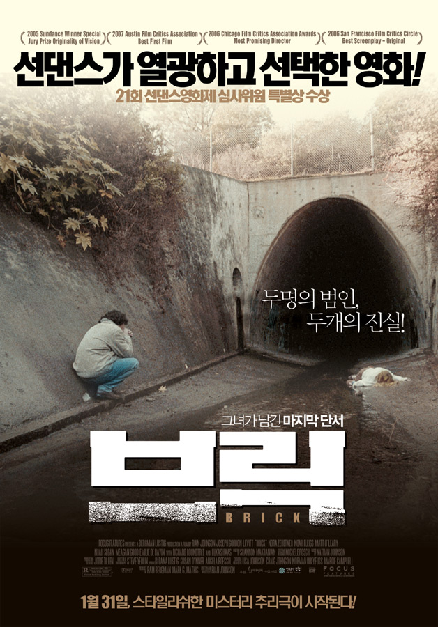

다급한 목소리로 ‘브릭’ 등 알 수 없는 말과 함께 도와달라는 한 통의 전화를 남기고 사라진 여자친구 에밀리. 그러나 이틀 뒤, 에밀리는 죽은 채로 발견되고 브렌든은 범인을 밝혀내기 위해 정보에 빠른 브레인의 도움을 빌어 사건을 추적해나간다. 그녀가 남긴 마지막 단서 ‘브릭’을 추적하던 브렌든은 똑똑하고 매력적인 팜므 파탈 로라에게 중요한 정보를 얻는다. 로라를 통해 ‘브릭’을 판매하는 카리스마 킹 핀의 조직에 잠입하는데 성공한 브렌든, 말보다 주먹을 믿는 터그는 브렌든을 경계하지만, 리더 킹 핀은 브렌든을 마음에 들어한다. 한편 에밀리와 친했던 약쟁이 도드는 브렌든을 범인으로 지목하는데… 끝까지 예측할 수 없는 범인의 정체, 마지막 진실이 밝혀진다.